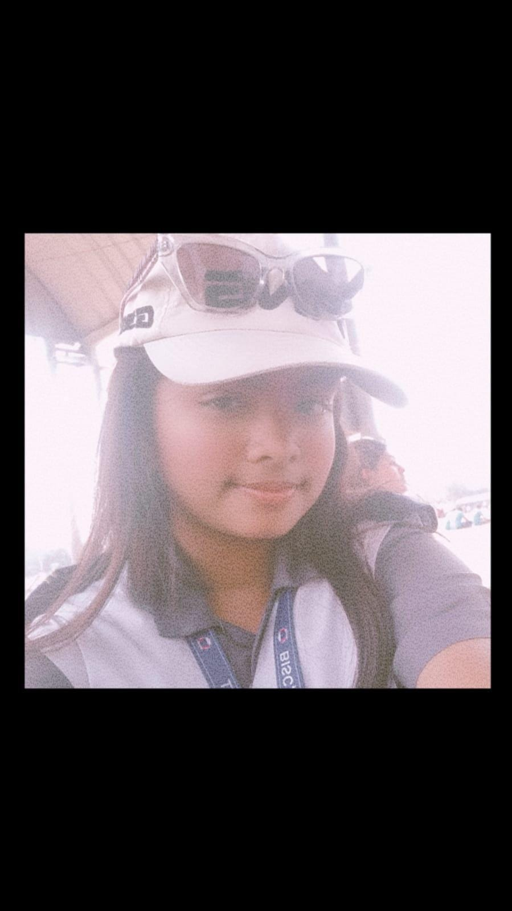

My Best Friends



My best friend Fariba is more than any of my friends. She is so friendly, lovable, smart, talented and beautiful. She is the only person I can rely on during my painful or happy days. I can tell her everythings that I cannot tell others. She is the most mature and understandable. She is the one who stays on my side when I have no one during my hardships. She helps me with everything, cares for me and gives off my second mother vibes. In my group, me and fariba looks like the best duo.
Lazara is my another best friend. She is the second person who stays by my side when I have fight with others. She gives off my vibes. She is so fun to hang out with and caring.
Abiat is the one who is delulu like me. If its something interesting, we get more delulu than anyone. As we are delulu, we share a great time with each other. She also is very caring and reponsible.
Parisha is like someone who you can enjoy spending time if you LOVE dramas. She is the best person to spend time with if you love it. She lso takes a role of caring person but not more than others.
If you love anime like bongou stray dogs, then you must enjoy spending time with her. She is like a person who so obsessed, delulu over some fictional characters like Chuuya. She is really funny and dirty-minded like bro I never saw someone this dirty minded in my life.